⛏️ Best Mining Pals in Palworld (1.0 Rankings)
Looking for the best Pals to mine ore, coal and stone at your base? Palworld 1.0 reworked the entire work suitability system — level caps went up and many Pals got new values, so most pre-1.0 tier lists are outdated. This ranking is generated from extracted 1.0 game data and covers all 57 Pals with mining suitability.
Quick picks
- Best overall: Aegidron — Mining Lv8 (breed-only)
- Best wild-catchable: Blazamut — Mining Lv7
- Best early game: Penking (#18) — Mining Lv3, low Paldeck number so you can catch it early
Full ranking — all 57 mining Pals
| # | Pal | Mining | Element | Other work | How to get |
|---|---|---|---|---|---|
| 1 | 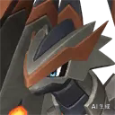 Aegidron #184 | Lv8 | Dragon/Ground | — | 🥚 Breed only |
| 2 | 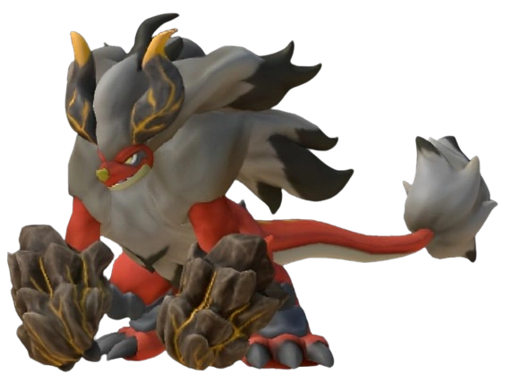 Blazamut #137 | Lv7 | Fire | Kindling 6 | ✅ Wild |
| 3 | 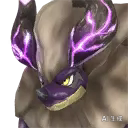 Blazamut Ryu #137 | Lv7 | Dragon/Fire | Kindling 6 | 🥚 Breed only |
| 4 | 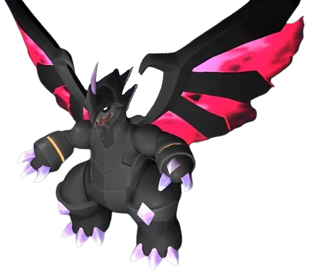 Astegon #158 | Lv7 | Dragon/Dark | Handiwork 3 | ✅ Wild |
| 5 | 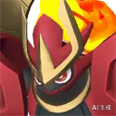 Knocklem Ignis #159 | Lv7 | Fire | Transporting 7, Kindling 5 | 🥚 Breed only |
| 6 | 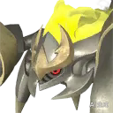 Menasting Terra #99 | Lv6 | Ground | Lumbering 3 | 🥚 Breed only |
| 7 | Lv6 | Ground/Grass | Transporting 6, Lumbering 5, Planting 3, Gathering 3 | 🥚 Breed only | |
| 8 | 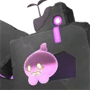 Dualith Noct #138 | Lv6 | Ground/Dark | Transporting 6, Lumbering 5, Planting 3, Gathering 3 | 🥚 Breed only |
| 9 | 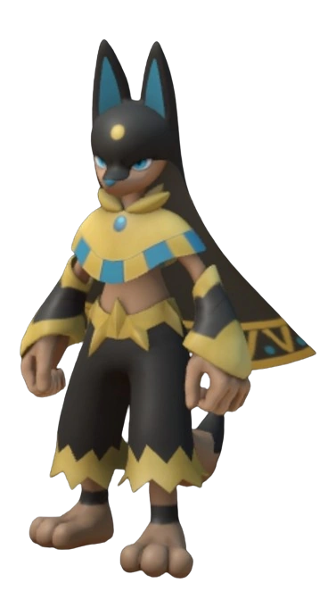 Anubis #139 | Lv6 | Ground | Handiwork 6, Transporting 4 | 🥚 Breed only |
| 10 | 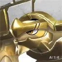 Tetroise Primo #142 | Lv6 | Neutral | — | 🥚 Breed only |
| 11 | 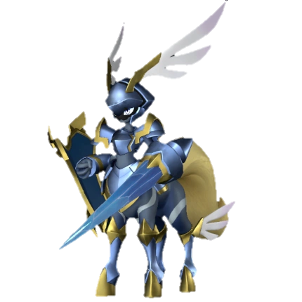 Paladius #198 | Lv6 | Neutral | Lumbering 6 | ✅ Wild |
| 12 | 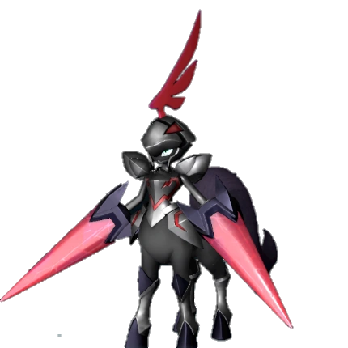 Necromus #199 | Lv6 | Dark | Lumbering 6 | ✅ Wild |
| 13 | 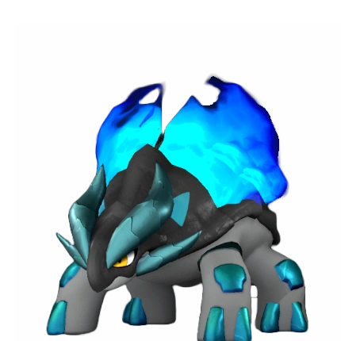 Reptyro Cryst #96 | Lv5 | Ice/Ground | Cooling 5 | ✅ Wild |
| 14 | 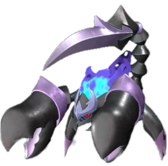 Menasting #99 | Lv5 | Dark/Ground | Lumbering 3 | ✅ Wild |
| 15 | 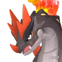 Moldron #105 | Lv5 | Fire/Ground | Kindling 5 | 🥚 Breed only |
| 16 | Moldron Cryst #105 | Lv5 | Ice/Ground | Cooling 5 | 🥚 Breed only |
| 17 | Lv5 | Grass | Planting 4, Gathering 4 | 🥚 Breed only | |
| 18 | Lv5 | Ground/Grass | Transporting 5, Handiwork 2 | 🥚 Breed only | |
| 19 | 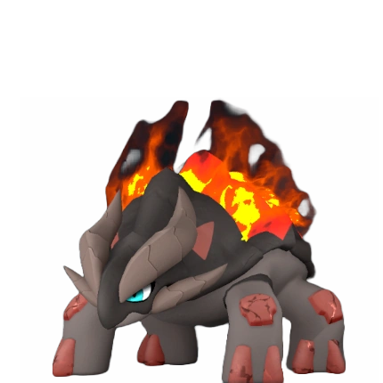 Reptyro #129 | Lv5 | Fire/Ground | Kindling 5 | ✅ Wild |
| 20 | 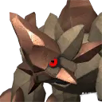 Pierdon #131 | Lv5 | Ground | — | 🥚 Breed only |
| 21 | 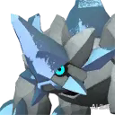 Pierdon Cryst #131 | Lv5 | Ice | Cooling 6 | 🥚 Breed only |
| 22 | 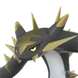 Cryolinx Terra #132 | Lv5 | Ground | Lumbering 6, Transporting 4, Handiwork 2 | 🥚 Breed only |
| 23 | 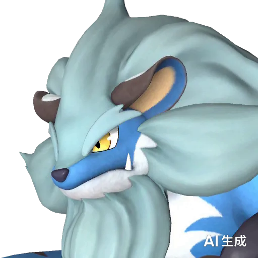 Bastigor #191 | Lv5 | Ice | Cooling 8, Lumbering 6 | 🥚 Breed only |
| 24 | Polapup Terra #72 | Lv4 | Ice/Ground | Cooling 4 | 🥚 Breed only |
| 25 | Lv4 | Grass/Ground | Planting 4, Lumbering 4 | ✅ Wild | |
| 26 | 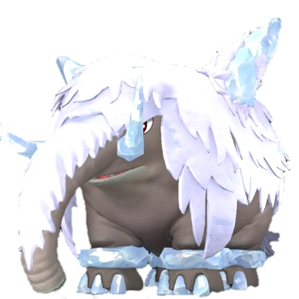 Mammorest Cryst #100 | Lv4 | Ice/Ground | Lumbering 5, Cooling 5 | ✅ Wild |
| 27 | 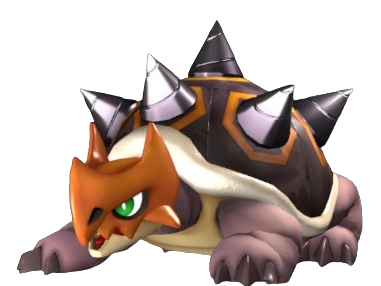 Digtoise #107 | Lv4 | Ground | — | ✅ Wild |
| 28 | 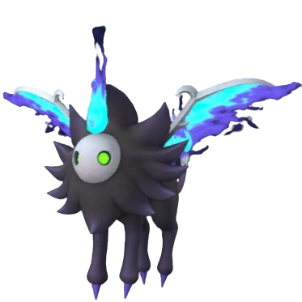 Maraith #117 | Lv4 | Dark | Gathering 4 | ✅ Wild |
| 29 | 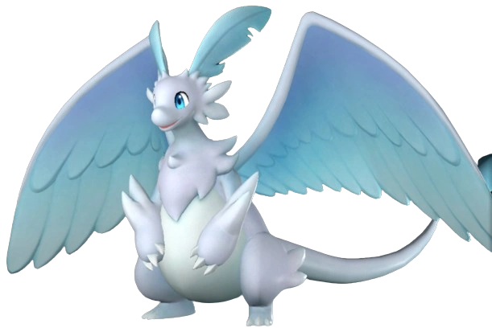 Quivern #124 | Lv4 | Dragon | Transporting 5, Gathering 3, Handiwork 2 | ✅ Wild |
| 30 | 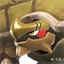 Tetroise #142 | Lv4 | Ground | — | 🥚 Breed only |
| 31 | 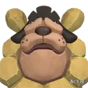 Bulldosu #156 | Lv4 | Ground | Transporting 3 | 🥚 Breed only |
| 32 | 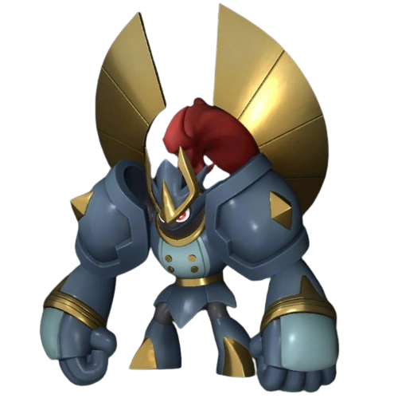 Knocklem #159 | Lv4 | Ground | Transporting 4, Gathering 3 | ✅ Wild |
| 33 | 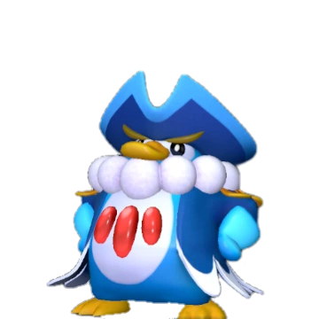 Penking #18 | Lv3 | Water/Ice | Transporting 3, Watering 2, Handiwork 2, Cooling 2 | ✅ Wild |
| 34 | 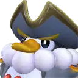 Penking Lux #18 | Lv3 | Water/Electric | Electricity Generation 3, Transporting 3, Watering 2, Handiw | 🥚 Breed only |
| 35 | 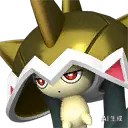 Turtacle Terra #37 | Lv3 | Water/Ground | Watering 2, Transporting 1 | 🥚 Breed only |
| 36 | 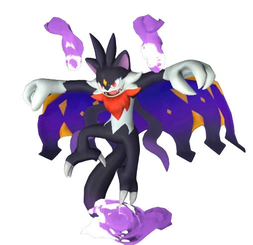 Tombat #52 | Lv3 | Dark | Gathering 2, Transporting 2 | ✅ Wild |
| 37 | Elgrove Cryst #81 | Lv3 | Ice | Cooling 5, Lumbering 3, Transporting 3 | 🥚 Breed only |
| 38 | 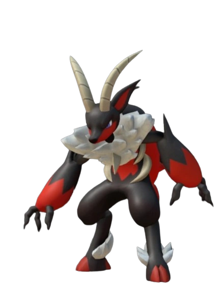 Incineram #91 | Lv3 | Fire/Dark | Kindling 3, Handiwork 2, Transporting 2 | ✅ Wild |
| 39 | Lv3 | Grass/Ground | Planting 5, Gathering 5 | 🥚 Breed only | |
| 40 | Lv3 | Dragon/Grass | Planting 5, Gathering 4, Transporting 4, Handiwork 2 | 🥚 Breed only | |
| 41 | Snugloo #133 | Lv3 | Ice | Cooling 3, Handiwork 2, Transporting 2 | 🥚 Breed only |
| 42 | 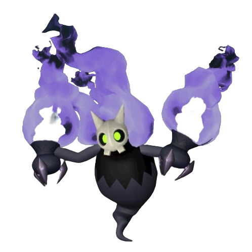 Sootseer #135 | Lv3 | Dark/Fire | Kindling 3, Handiwork 3, Gathering 2, Farming 2 | ✅ Wild |
| 43 | 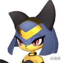 Sekhmet #140 | Lv3 | Ground | Handiwork 6, Transporting 2 | 🥚 Breed only |
| 44 | 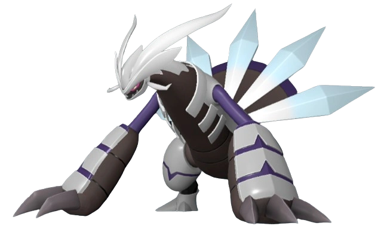 Xenogard #146 | Lv3 | Dragon | — | ✅ Wild |
| 45 | 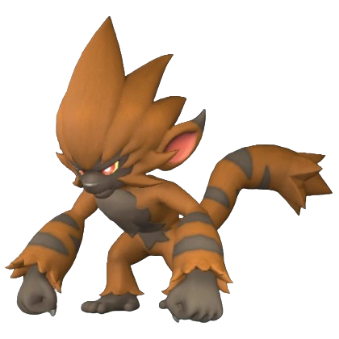 Gorirat Terra #150 | Lv3 | Ground | Transporting 3, Handiwork 2 | ✅ Wild |
| 46 | 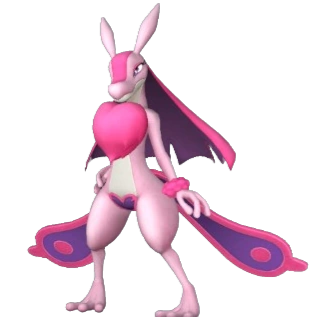 Lovander #69 | Lv2 | Dark | Handiwork 3, Medicine Production 3, Transporting 2 | ✅ Wild |
| 47 | Lv2 | Grass | Planting 3, Lumbering 3, Transporting 3, Gathering 2 | 🥚 Breed only | |
| 48 | Dumud #109 | Lv2 | Ground/Water | Watering 2, Transporting 1, Farming 1 | ✅ Wild |
| 49 | Dumud Gild #109 | Lv2 | Ground/Water | Farming 4, Watering 2, Transporting 1 | 🥚 Breed only |
| 50 | 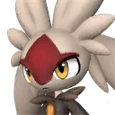 Lapiron #165 | Lv2 | Ground | Gathering 4, Handiwork 3, Transporting 1 | 🥚 Breed only |
| 51 | 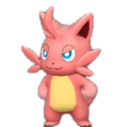 Cattiva #2 | Lv1 | Neutral | Handiwork 1, Gathering 1, Transporting 1 | ✅ Wild |
| 52 | 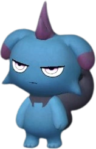 Depresso #16 | Lv1 | Dark | Handiwork 1, Transporting 1, Farming 1 | ✅ Wild |
| 53 | 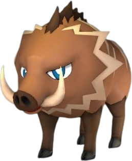 Rushoar #28 | Lv1 | Ground | — | ✅ Wild |
| 54 | 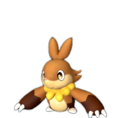 Fuddler #31 | Lv1 | Ground | Handiwork 1, Transporting 1 | ✅ Wild |
| 55 | 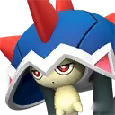 Turtacle #37 | Lv1 | Water | Watering 2, Transporting 1 | 🥚 Breed only |
| 56 | 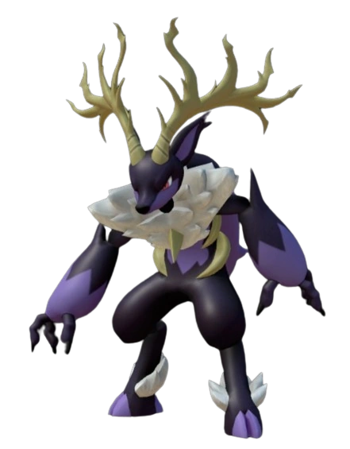 Incineram Noct #47 | Lv1 | Dark | Handiwork 2, Transporting 2 | ✅ Wild |
| 57 | 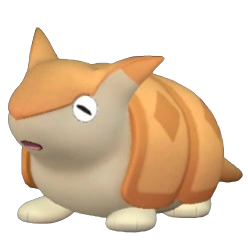 Kikit #126 | Lv1 | Ground | — | ✅ Wild |
🥚 Breed-only Pal? Use the PalTool reverse breeding calculator to find the shortest breeding path from Pals you can catch in the wild.
Work rankings: ⛏️ Mining · 🔥 Kindling · 🔨 Handiwork · 🪓 Lumbering · 📦 Transporting · 🌱 Planting · 💧 Watering · 🧺 Gathering · ⚡ Electricity Generation · 💊 Medicine Production · ❄️ Cooling · 🐄 Farming
Pals by element: 🔥 Fire · 💧 Water · 🌿 Grass · ⚡ Electric · ❄️ Ice · 🪨 Ground · 🌑 Dark · 🐉 Dragon · ⚪ Neutral
Data sourced from Palworld 1.0 game files. Last updated: July 2026.